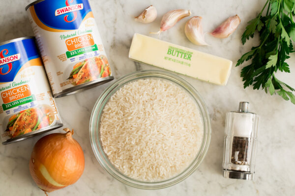

Garlic Rice

Description
It's just rice man, idk what more to say.
Ingredients
- 1 cup water
- 1 cup garlic rice
- 1/4 cup frozen green peas
- 1 teaspoon cumin seeds
Steps
- In a saucepan bring water to a boil. Add rice and stir. Reduce heat, cover and simmer for 20 minutes.
- When rice is cooked, stir in peas and cumin. Cover and let stand for 5 minutes.